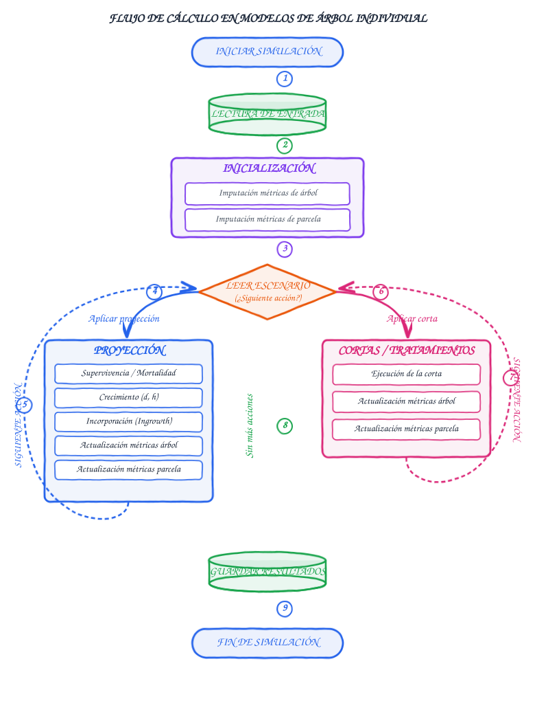
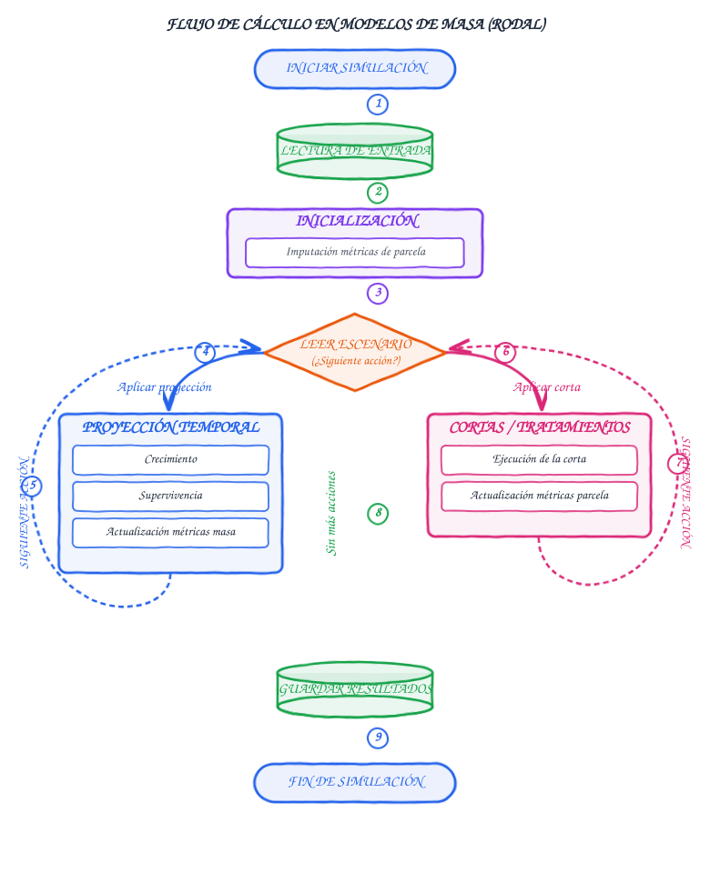

Modelos Forestales en SIMANFOR
SIMANFOR integra un catálogo diverso de modelos forestales que permiten proyectar el crecimiento de las masas forestales y simular diferentes alternativas de gestión y tratamientos selvícolas (ver modelos de corta).
Los modelos se dividen en dos categorías principales de crecimiento más un conjunto de modelos de intervención selvícola:
- Modelos de crecimiento para árbol individual (Individual-tree models): Operan a nivel de pie individual, simulando el crecimiento, la probabilidad de mortalidad y la incorporación de nuevos árboles de forma desglosada, y calculando los atributos de la parcela en base a todos los árboles presentes en la misma.
- Modelos de crecimiento para masa (Stand-level models): Operan a nivel agregado de rodal o parcela, proyectando variables como la densidad de pies, área basimétrica, volumen total y altura dominante.
- Modelos de corta (Thinning models): Definen la extracción y aprovechamiento del arbolado según criterios selvícolas (cortas por lo bajo, por lo alto, sistemáticas, por especies o con árboles de futuro) tanto para modelos de árbol como de masa.
Flujo de cálculo en modelos de árbol individual
En los modelos de árbol individual, el motor del simulador ejecuta los cálculos considerando las interacciones entre los árboles del inventario y las características globales de la parcela:

Fases de la simulación de árbol:
- Lectura de datos iniciales: Carga de las hojas
Parcelas(identificadores, localización, etc.) yPiesMayores(diámetros, alturas, especies y factores de expansión). - Inicialización: Se estiman las variables que falten en el inventario (alturas, volúmenes, variables de copa...) y se calculan las variables globales de parcela.
- Bucle de simulación por escenario: Según lo programado por el usuario en los escenarios selvícolas:
- Proyección temporal: Evalúa supervivencia individual, aplica crecimiento, incorpora nuevos árboles a la masa y actualiza métricas de cada árbol y de la parcela para el periodo de tiempo establecido (este periodo tiene que seguir las recomendaciones del modelo a utilizar).
- Cortas / Tratamientos: Extrae los árboles seleccionados (por tamaño, especie o criterio selvícola) y actualiza existencias. Para más detalles sobre las opciones de intervención, consulta la guía de modelos de corta.
- Salida de resultados: Generación de tablas de resultados con el estado de la masa y del arbolado en cada paso de la simulación.
Flujo de cálculo en modelos de masa (rodal)
Los modelos de masa simplifican la entrada de datos, requiriendo únicamente información agregada de la parcela sin necesidad de medir cada árbol individualmente:

Fases de la simulación de masa:
- Lectura de datos iniciales: Carga únicamente de la hoja
Parcelas(edad, densidad, área basimétrica o altura dominante según el modelo). - Inicialización: Imputación de variables de masa iniciales requeridas y faltantes (volumen, índice de sitio...).
- Bucle de simulación por escenario:
- Proyección temporal: Modela la curva de crecimiento global de la masa, la mortalidad natural agregada, y actualiza las variables de la parcela para el periodo de tiempo establecido (este periodo tiene que seguir las recomendaciones del modelo a utilizar).
- Cortas / Tratamientos: Aplica reducciones directas sobre la densidad, área basimétrica o volumen de la masa, actualizando las métricas de la parcela posteriormente (ver modelos de corta).
- Salida de resultados: Generación de tablas agregadas de evolución de la parcela.
Configuración de modelos de corta
Las intervenciones selvícolas se definen en los escenarios seleccionando el modelo de corta adecuado, el criterio de extracción (densidad, área basimétrica o volumen) y la intensidad porcentual:

Para consultar la descripción detallada de cada modelo de corta, su funcionamiento en masas mixtas y los parámetros requeridos, consulta la guía de modelos de corta y tratamientos selvícolas.
Modelos de árbol individual disponibles
| Modelo | Especies Objetivo | Región |
|---|---|---|
| Cálculo de alturas para España | Todas las especies forestales arbóreas de España | España |
| Cálculo de existencias (España) | Todas las especies forestales de España | España |
| IBEROPS (calibrado) | Pinus sylvestris | Sistema Ibérico y Sistema Central (Ávila, Burgos, Segovia y Soria; España) |
| IBEROPS (original) | Pinus sylvestris | Sistema Ibérico y Sistema Central (Ávila, Burgos, Segovia y Soria; España) |
| IBEROPT (calibrado) | Pinus pinaster, Pinus pinaster mesogeensis | Sistema Ibérico Meridional (Cuenca, Guadalajara, Teruel y Soria; España) |
| IBEROPT (original) | Pinus pinaster, Pinus pinaster mesogeensis | Sistema Ibérico Meridional (Cuenca, Guadalajara, Teruel y Soria; España) |
| Masas Mixtas de España | Pinus sylvestris, Pinus uncinata, Pinus pinea, Pinus halepensis, Pinus nigra, Pinus pinaster, Quercus robur, Quercus petraea, Quercus pyrenaica, Quercus faginea, Quercus ilex, Quercus suber, Fagus sylvatica | España |
| Masas Puras de España | Pinus sylvestris, Pinus uncinata, Pinus pinea, Pinus halepensis, Pinus nigra, Pinus pinaster, Pinus canariensis, Pinus radiata, Abies alba, Juniperus thurifera, Quercus robur, Quercus petraea, Quercus pyrenaica, Quercus faginea, Quercus ilex, Quercus suber, Populus nigra, Eucalyptus globulus, Eucalyptus camaldulensis, Fagus sylvatica, Castanea sativa, Quercus pubescens, Populus x canadensis, Betula alba | España |
| PINEA Andalucía | Pinus pinea | Andalucía (Huelva, Cádiz y Sevilla; España) |
| PINEA en Cataluña | Pinus pinea | Cataluña (Gerona, Lleida, Barcelona y Tarragona; España) |
| PINEA Sistema Central | Pinus pinea | Sistema Central (Palencia, Zamora, Valladolid, Burgos, Salamanca, Ávila, Segovia y Madrid; España) |
| Pinus halepensis en Aragón | Pinus halepensis | Aragón (Zaragoza, Huesca y Teruel; España) |
| Pinus halepensis en Cataluña y Aragón | Pinus halepensis | Valle medio del Ebro (Aragón) y Cataluña (Huesca, Zaragoza, Girona, Barcelona, Lleida y Tarragona; España) |
| Pinus nigra en Cataluña | Pinus nigra | Cataluña (Gerona, Lleida, Barcelona y Tarragona; España) |
| Pinus sylvestris Cataluña masas naturales | Pinus sylvestris | Cataluña (Gerona, Lleida, Barcelona y Tarragona; España) |
| Pinus sylvestris Cataluña plantaciones | Pinus sylvestris | Cataluña (Gerona, Lleida, Barcelona y Tarragona; España) |
| Quercus pyrenaica en Castilla y León | Quercus pyrenaica | Castilla y León (León, Palencia, Burgos, Zamora, Valladolid, Soria, Salamanca, Ávila y Segovia; España) |
| Quercus pyrenaica en Castilla y León - Proyecto LifeRebollo+ | Quercus pyrenaica | Castilla y León (León, Palencia, Burgos, Zamora, Valladolid, Soria, Salamanca, Ávila y Segovia; España) |
| RAP-ORGANON, plantaciones de Alnus rubra en Oregón y Washington (EEUU) | Alnus rubra | Oregón y Washington (EE. UU.) |
| SiTree - Modelo de Noruega | spruce, pine, beech, others | Noruega |
Modelos de masa (rodal) disponibles
| Modelo | Especies Objetivo | Región |
|---|---|---|
| Betula pubescens en Galicia | Betula pubescens | Galicia (España) |
| Cistus ladanifer en Zamora | Cistus ladanifer | Zamora (España) |
| Modelos de masa para Rumanía | Todas las especies | Rumanía |
| Modelos de masa para Rumanía (BAU) | Todas las especies | Rumanía |
| Pinus nigra en Castilla y León | Pinus nigra | Castilla y León (España) |
| Pinus pinaster en zonas costeras de Galicia | Pinus pinaster, Pinus pinaster atlantica | Galicia (España) |
| Pinus pinaster en zonas interiores de Galicia | Pinus pinaster, Pinus pinaster atlantica | Galicia (España) |
| Pinus pinaster mesogeensis en la Península Ibérica | Pinus pinaster, Pinus pinaster mesogeensis | Península Ibérica |
| Pinus radiata en Galicia | Pinus radiata | Galicia (España) |
| Pinus sylvestris en el Alto Valle del Ebro | Pinus sylvestris | Alto Valle del Ebro (España) |
| Pinus sylvestris en Galicia | Pinus sylvestris | Galicia (España) |
| Pinus sylvestris en Ucrania | Pinus sylvestris | Ucrania |
| Populus sp. en el Noreste de España | Populus sp. | Noreste de España |
| Quercus petraea en la Cordillera Cantábrica | Quercus petraea | Cordillera Cantábrica (España) |
| Quercus robur en Galicia | Quercus robur | Galicia (España) |
| RETECHFOR - Castilla y León | Pinus sylvestris, Pinus pinaster | Castilla y León (España) |
| SILVES - Pinus sylvestris en Madrid | Pinus sylvestris | Madrid (España) |
| SILVES - Pinus sylvestris en Sistema Ibérico y Sistema Central | Pinus sylvestris | Sistema Ibérico y Sistema Central (España) |
| Tectona grandis en Campeche (México) | Tectona grandis | Campeche (México) |